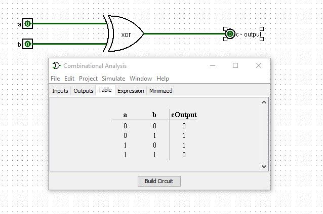
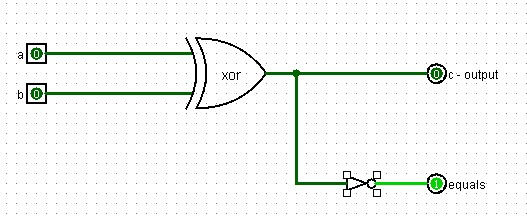
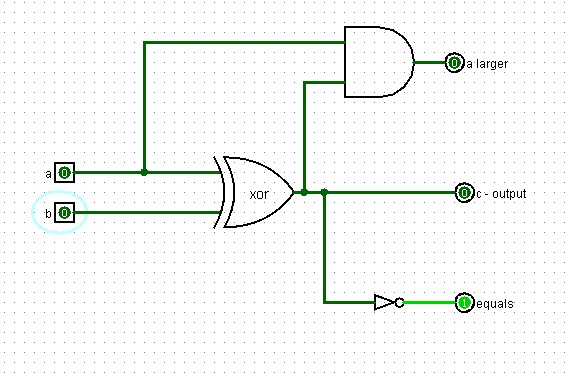
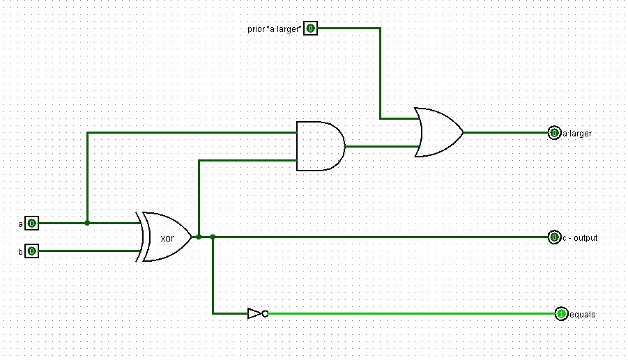
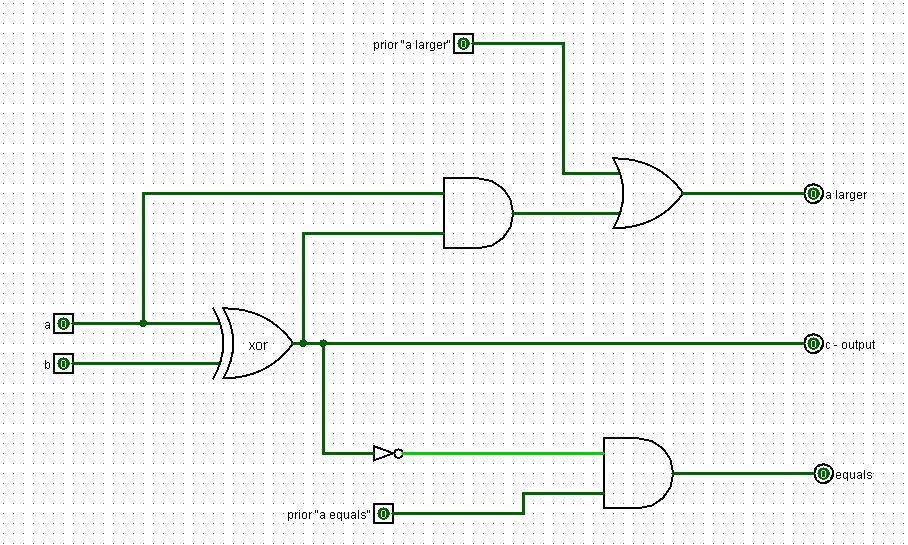
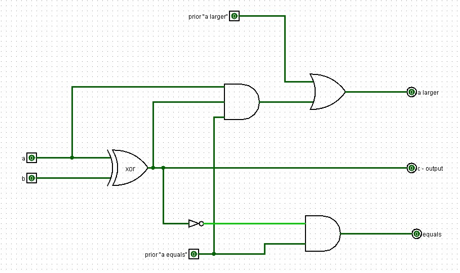
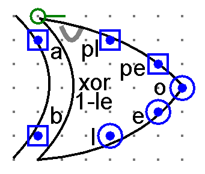
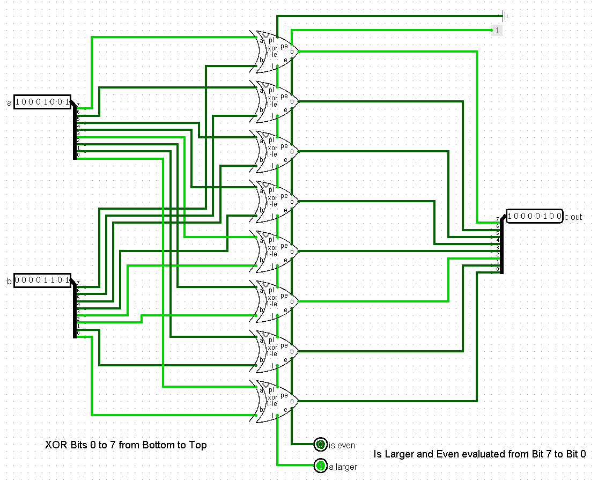

Larger, Equal, Zero
Sections 6.6 – 6.8 | Estimated time: ~1.3 hours reading, ~1.3 hours building
Two legs left, and they are not like the other five. The XOR leg answers three questions instead of one, and the zero function does not belong to any leg at all. Between them they produce the three signals that will eventually let your CPU make a decision.
6.6 One XOR gate, three answers
Start with the gate. XOR outputs 1 when its two inputs are different and 0 when they are the same.

Read that table again with a different question in mind. You wanted to know whether the bitwise XOR of two bytes is — and it is, that is the seventh operation. But look at what else is sitting in the same table: "the inputs differ" is exactly the opposite of "the inputs are equal." A comparison is already there; it is just upside down.
So this leg produces three outputs from the same gate:
o
the XOR result
Straight off the gate. This is the bit that goes into the 8-bit XOR output.
e
are these two bits equal?
The XOR result, inverted. Free — one NOT gate hanging off a wire that already existed.
l
is a larger than b?
The interesting one. Needs one more gate and one more idea.
The equals output
Branch off the XOR output and put a NOT gate on the branch. When the bits match, XOR gives 0, the NOT gives 1, and e reads "equal." That is the whole circuit.

The "a is larger" output
For a single pair of bits, "a is larger than b" can only mean one thing: a is 1 and b is 0. There is no other way for one bit to beat another.
The Fall 2025 build finds this with an AND gate fed by a and by the XOR result, and the reasoning is worth following because it reuses work rather than adding a new comparison:
- If the XOR result is 0, the bits are the same, so
acannot be larger. The AND gives 0. Correct. - If the XOR result is 1, the bits differ — one of them is 1 and the other is 0. Which one? Look at
a. Ifais 1 then it is the larger one. The AND gives 1. Correct.

a with the XOR result. Build this and test all four input combinations before going further.Four input combinations, and only one of them should light l:
| a | b | o (XOR) | e (equal) | l (a larger) |
|---|---|---|---|---|
| 0 | 0 | 0 | 1 | 0 |
| 0 | 1 | 1 | 0 | 0 |
| 1 | 0 | 1 | 0 | 1 |
| 1 | 1 | 0 | 1 | 0 |
Why one bit is not enough, and what has to be passed along
Comparing whole bytes is where this gets interesting, and it is the reason the circuit needs two more pins.
Compare 10000000 with 01111111. Bit by bit, b wins six of the eight comparisons. But a is 128 and b is 127, so a is larger. Counting which side wins more bits gives the wrong answer.
Work down from bit 7. As long as the bits match, the question is still open. The first place they differ, whichever number has the 1 there is larger — and nothing below that position can change it, because every bit below is worth less than the one you just resolved.
This is exactly how you compare two decimal numbers of the same length. 4,182 versus 4,179: the thousands match, the hundreds match, the tens differ — 8 beats 7 — and you stop. You do not look at the units, because you cannot make up 10 with a single digit worth 1.
So each bit's comparator needs to be told two things by the bit above it:
pl— "prior larger": has some higher bit already settled thatais larger?pe— "prior equal": have all the higher bits matched, so this bit still gets a say?
And the three cases the Fall 2025 build walks through are the three things those two signals have to handle.
Case 1 — the decision was already made above
If a higher bit resolved that a is larger, that verdict must survive all the way to the bottom regardless of what the lower bits say. So the l output ORs in pl: once it is 1, it stays 1.

pl so a verdict from above is carried down untouched.Case 2 — equality has to be unanimous
Two bytes are equal only if every pair of bits is equal. So this stage's e output ANDs its own equality with pe: equal here and equal everywhere above. One mismatch anywhere and pe goes to 0 and stays there.

pe. Equality is unanimous or it is nothing.Case 3 — the one that catches people
Here is the subtle one. This stage may only announce "a is larger" if the question was still open when it got here. If a higher bit had already decided that b is larger, then pl is 0 and pe is 0 — and this stage must stay quiet even if its own a bit beats its own b bit.
Nothing in cases 1 and 2 prevents that. The fix is to widen the AND gate on the l leg from two inputs to three, and feed pe in as the third. Now this stage can only claim a win when everything above it was equal.

l leg's AND takes three inputs, and pe is the permission to speak.Three outputs from one pair of bits and two incoming status signals:
| Output | Expression | In words |
|---|---|---|
o | a XOR b | the bitwise XOR result for this bit |
e | NOT(a XOR b) AND pe | equal here and equal everywhere above |
l | pl OR (a AND (a XOR b) AND pe) | already decided above, or decided here with permission |
The pe term in l is the part almost nobody derives on their own. Leave it out and your comparator will be right for most inputs and wrong for the ones where the higher bits favour b — which is the worst kind of bug, because it passes casual testing.
Build this as XOR_CMP_1BIT with pins a, b, pl, pe in and o, l, e out, and test it against the table above with pl = 0 and pe = 1. Then test it once more with pe = 0 and confirm that l and e both stay at 0 no matter what a and b do. That second test is the one that proves case 3 works.

pl and pe inputs are at the top and the l and e outputs at the bottom, on purpose — section 6.7 explains why that choice matters.6.7 Eight of them, chained the other way
XOR_CMP_8BIT is eight instances of XOR_CMP_1BIT, each one's l and e feeding the next one's pl and pe. The eight o outputs go back together, in position, to make the 8-bit XOR result.
Two details make it work:
Bit 7's instance runs first, bit 6's takes its outputs, and so on down to bit 0. Bit 0's l and e are the whole circuit's al and eq outputs — by then every bit has had its say.
Bit 7's instance has nothing above it, so its pl and pe come from Wiring constants:
pl = 0— nothing above has decided thatais larger, because there is nothing above.pe = 1— everything above matches, vacuously, because there is nothing above to mismatch.
Get these backwards and the circuit will report that a is always larger, or that nothing is ever equal.
That layout choice in the circuit appearance now makes sense: with the pl/pe inputs at the top of the component and the l/e outputs at the bottom, you can stack the eight instances vertically with bit 7 highest, and the status signals flow straight down the stack with no wire crossing anything.

The direction is the point
You have now built two circuits made of eight identical stages chained together, passing a status signal from one to the next. They run in opposite directions, and the reason is not a wiring convention.
The adder — LSB to MSB
A carry is produced by a low bit and consumed by the next higher one. It has nowhere to go but up.
The comparator — MSB to LSB
The most significant differing bit decides the answer. Information flows from where the decision gets made toward the bits that no longer matter.
Both circuits are "build one stage, instantiate it eight times, hand a status signal along." That is the pattern this whole course is built on — the same one that gave you FULL_ADDER × 8 in Week 3 and MEM_1BIT × 8 in Week 5.
But you cannot pick the direction by looking at the wiring. You have to ask what the operation actually needs: addition builds an answer from the bottom up, comparison resolves one from the top down. Get the direction from the mathematics, then wire it.
| a | b | xor | al | eq |
|---|---|---|---|---|
11001010 | 10110110 | 01111100 | 1 | 0 |
00111100 | 00111100 | 00000000 | 0 | 1 |
00000001 | 10000000 | 10000001 | 0 | 0 |
10000000 | 01111111 | 11111111 | 1 | 0 |
The last row is the one that catches a comparator built without the pe term, and the third row is the one that catches a chain wired the wrong way up.
6.8 Answers about the answer
The last circuit this week is the smallest one in the course.
IS_ZERO takes the 8-bit value and reports 1 if every single bit is 0. An 8-input OR gate gives you 1 when any bit is set and 0 only when they are all clear — which is precisely backwards from what you want. So put a NOT on it. An eight-input OR, inverted. Eight bits in, one bit out. That is the entire circuit.
IS_ZERO is not one of the seven legs and it does not belong to any of them. It watches the ALU's final output, after the selection stage — so it reports on whichever operation was chosen, whatever that was. AND two bytes together and get zero, and Z lights. Subtract two equal bytes and get zero, and Z lights.
The same is true of the comparator's two outputs, and it is worth being explicit because it is easy to miss. al and eq come off the comparator leg, and that leg is running all the time — not only when opcode 110 is selected. Ask the ALU to AND two bytes and it will also, in the same instant, tell you which of them is larger.
| Flag | Comes from | Means |
|---|---|---|
Z | the output stage | the 8-bit result is all zeros |
AL | the comparator leg | A is greater than B |
EQ | the comparator leg | A equals B |
The ALU does not only produce an answer. It produces answers about its answer. That is the difference between a calculator and a component a computer can be built from, and it is why the flags are live regardless of what was selected — whatever asks the question next should not have to ask the ALU to compute the comparison first.
What are they for? Next week you meet instructions that change which instruction runs next — branches. A branch is the machine looking at one of these flags and deciding where to go. The circuit that makes an if statement possible is the one you just built, and the wire it will read is EQ.
That is as much as is worth saying about it now. Week 7 does the rest.
Where you are
Nine circuits, if you have been building along: three bitwise legs, the adder instantiated from Week 3, two shift legs, the one-bit comparator, the eight-bit comparator, and the zero function. That is Logisim Checkpoint 2a, complete.
Test each one on its own and get them right now. Next week they go inside a single component with a decoder choosing between them, and a leg that is quietly wrong is much harder to find once seven of them are wired to the same output.
The remaining two pages of this week are the other track: the MIPS instructions that ask for these operations by name.